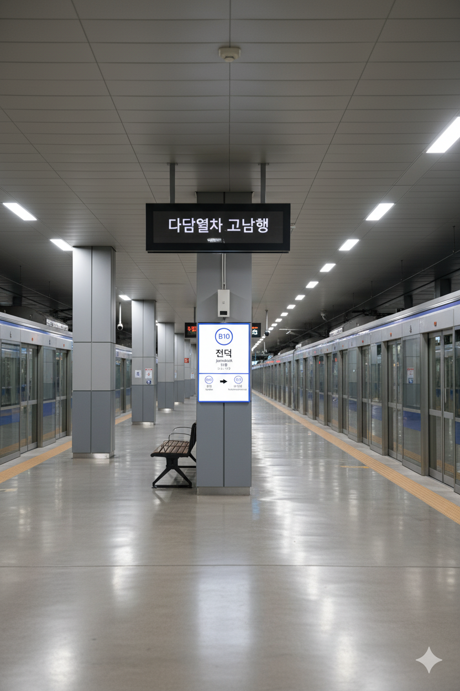

전덕역
1. 개요
효빈 도시철도 6호선 607번, 빈효선 광역전철 B10번. 효빈광역시 동구 덕현동 11-22 지하 소재.
2. 역 정보
6호선의 경우 원래는 계획에 없던 역이었으나, 빈효선과의 연계를 더욱 효율적으로 하기 위해 2018년에 착공해서 2021년에 개통하였다.
2.1. 역출구 정보
|
6
빈
전덕역 출구 정보
|
||
|---|---|---|
| 번호 | 주요 시설 및 방향 | 비고 |
| 1 | 전덕역 아파트 | |
| 2 | 결나공원 | |
| 3 | 산군중학교, 덕현3동행정복지센터, 전덕초등학교, 전덕중학교, 천풍공원 | |
| 4 | 삼댁공원 | |
3. 승강장
6호선

6호선 승강장 전경
| 덕 현 ↑ | ||||
| 하 | ㅣ | ㅣ | ㅣ | 상 |
| ↓ 전천중앙 | ||||
| 상 | 6 효빈 도시철도 6호선 | 마잡 방면 |
| 하 | 6 효빈 도시철도 6호선 | 고송나루 방면 |
빈효선

빈효선 승강장 전경
| ↑ 효 빈 | |||
| ㅣ | 하 | 상 | ㅣ |
| ↓ 하성천 | |||
| 상 | 빈 빈효선 광역전철 | 효빈항 방면 |
| 하 | 빈 빈효선 광역전철 | 약산 · 궁하 · 천주 · 고남 방면 |
4. 역 이용객 통계
| 전덕역 이용객 통계 | |||
|---|---|---|---|
| 연도 | 6호선 | 빈효선 | 총합 |
| 2020년 | - | 9,873명 | 9,873명 |
| 2021년 | 12,060명 | 9,983명 | 22,043명 |
| 2022년 | 14,024명 | 11,609명 | 25,633명 |
| 2023년 | 14,270명 | 11,813명 | 26,083명 |
| 2024년 | 14,521명 | 12,021명 | 26,542명 |
5. 연계 교통
5.1. 버스 하차
효빈 시내버스 노선이 주로 경유한다.
| 정류소명 | 방향 | 경유 노선 |
|---|---|---|
| 전덕 | 순방향 | 1, 37, 172, 2000, 6666 |
| 전덕(건너편) | 역방향 | 01-1, 73, 712, 721, 2000R, 6666R |
6. 기타
-
'고난의 동지'가 만난 눈물의 환승역
전덕역은 효빈 도시철도 6호선과 빈효선 광역전철이 만나는 환승역이지만, 두 노선 모두 윤대환 전 시장 시절(2006년~)의 교통 정책 혼선으로 인해 공사가 중단되거나 지연된 흑역사를 공유하고 있다.- 6호선: 당시 '전차 폐지 및 버스 중심' 공약으로 인해 타당성 조사가 파기되는 등 백지화 위기를 겪었다.
- 빈효선: 광역철도 사업 축소 및 예산 집행 보류로 인해 개통이 하염없이 미뤄졌었다.
-
지하와 지상의 극적인 만남
전덕역의 가장 큰 특징은 지하 깊숙이 위치한 6호선과 지상(고가)을 달리는 빈효선의 수직적 교차다.- 6호선 (지하): 효빈교통공사가 운영하는 중형 전동차가 지하 터널을 통해 들어온다.
- 빈효선 (지상): 코레일(KORAIL)이 운영하는 대형 전동차가 탁 트인 지상 선로를 통해 시원하게 진입한다.
-
운영 주체의 차이와 '100원의 장벽'
두 노선은 위치뿐만 아니라 운영 주체도 다르다(6호선: 효빈교통공사 / 빈효선: 한국철도공사). 이로 인해 환승 게이트 통과 시 별도 운임 100원이 추가로 부과된다. 시민들 사이에서는 "같은 역에서 갈아타는데 왜 돈을 더 내냐"는 볼멘소리가 나오기도 하지만, 두 노선이 제공하는 압도적인 이동 편의성(강남-강북 연결, 시외 연결) 덕분에 '통행세'라 생각하고 감수하는 분위기다. 코레일 파업 시에는 지상의 빈효선만 배차 간격이 늘어나는 등 운영 상황의 차이를 피부로 느낄 수 있는 곳이기도 하다. -
동구 주민들의 탈출구이자 '덕질' 베이스캠프
역이 위치한 덕현동은 거대한 아파트 숲을 이루는 주거 밀집 지역이다. 전덕역 개통 전에는 버스에 의존해야 했으나, 이제는 6호선을 타고 북구(고송/중수)나 청엽구로 마실을 가거나, 빈효선을 타고 효빈항이나 타 도시로 빠르게 이동할 수 있게 되어 동구 교통 혁명의 중심지가 되었다. 특히 교통이 편리하고 주거 환경이 쾌적해, 인근 성지(고송동 등)로 이동하기 위한 애니메이션 팬들의 거주지로도 인기가 높다.